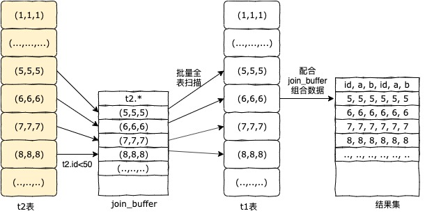

在上一篇文章<MySQL中如何更好的使用Limit？>中，我们最后写到limit优化的方式之一就是用到了join关联查询，那么多表的关联查询是如何执行的呢？
带着这个疑问，我们一起探究下join关联查询的执行步骤！
一、实验环境
1、MySQL版本
1
2
3
4
5
6
7mysql> select version();
+-----------+
| version() |
+-----------+
| 8.0.18 |
+-----------+
1 row in set (0.01 sec)2、实验表结构 t1数据100条，t2数据1000条
1
2
3
4
5
6
7
8
9
10
11
12
13
14
15
16
17
18
19
20
21
22
23
24
25
26
27
28
29
30
31
32
33
34
35
36mysql> desc t1;
+-------+---------+------+-----+---------+-------+
| Field | Type | Null | Key | Default | Extra |
+-------+---------+------+-----+---------+-------+
| id | int(11) | NO | PRI | NULL | |
| a | int(11) | YES | MUL | NULL | |
| b | int(11) | YES | | NULL | |
+-------+---------+------+-----+---------+-------+
3 rows in set (0.00 sec)
mysql> select count(*) from t1;
+----------+
| count(*) |
+----------+
| 100 |
+----------+
1 row in set (0.00 sec)
mysql> desc t2;
+-------+---------+------+-----+---------+-------+
| Field | Type | Null | Key | Default | Extra |
+-------+---------+------+-----+---------+-------+
| id | int(11) | NO | PRI | NULL | |
| a | int(11) | YES | MUL | NULL | |
| b | int(11) | YES | | NULL | |
+-------+---------+------+-----+---------+-------+
3 rows in set (0.01 sec)
mysql> select count(*) from t2;
+----------+
| count(*) |
+----------+
| 1000 |
+----------+
1 row in set (0.00 sec)
二、驱动表
- 1、驱动表的概念
提到join，就不得不说到驱动表。
驱动表：在关联查询中首先执行的表，叫做驱动表。在使用join时，默认会有MySQL的优化器去选择合适表作为驱动表。
在join语句执行过程中，驱动表是走全表扫描，而被驱动表是走树搜索。
执行以下sql：
1 | mysql> explain select * from t1 join t2 on t1.a=t2.a; |
在 explain 中，第一行的表就是驱动表。可以看出，上面的sql语句的驱动表为t1表。
根据row字段信息，可以看出，t1表进行了全表扫描，t2表使用了字段a上的索引。
- 2、如何选取驱动表
a. MySQL自动选取
一般来说，MySQL会选取小表作为驱动表，注意，这里的小表不是总数据量少的那张表，而是根据sql中的表过滤条件去决定的。
执行以下sql：
1 | # sql1 |
以上实验可以看出：
sql1的驱动表为t1表，因为在没有其他过滤条件的情况下，t1表只有100条数据，优先以小表作为驱动表。
sql2的驱动表为t2表，因为where条件中的 t2.id<50 使得t2表过滤之后只有49条数据，所以t2表是小表。
b. 手动选取
使用 straight_join 代替 join 其将强制选取第一张表作为驱动表。
执行下上面的sql2，将join换为straight_join。
1 | mysql> explain select * from t1 straight_join t2 on t2.b=t1.b where t2.id<50; |
三、关联查询算法
MySQL中join关联查询共有四种查询算法：
1 | Simple Nested-Loop join, |
在使用索引关联的情况下，有Index Nested-Loop join和Batched Key Access join两种算法；
在不使用索引关联的情况下，有Simple Nested-Loop join和Block Nested-Loop join两种算法。
- 1、索引关联情况（t1,t2表的a字段有索引)
1 | mysql> explain select * from t1 join t2 on t2.a=t1.a where t2.id<50; |
执行步骤为：
1、MySQL优化器根据过滤条件得出驱动表为t2；
2、根据 t2.id<50，t2.* 查询到一行t2.id=1的数据，拿到t2.a的值和t1.a做关联；
3、搜寻t1.a索引树，找到t1.id，回表查询t1.*数据；
4、组成整体数据行，放入结果集中；
5、循环1-4步骤，直到取完数据。
执行过程图：
以上流程就是Index Nested-Loop join算法（索引嵌套循环连接）的执行过程，可以发现，如果在被驱动表(t.1)的索引树上不存在需要查询的所有字段，则需要回表到聚簇索引上查询，
每次回表都是一次随机查询，对于MySQL来说，性能并不是很好。
因此，MySQL在5.6引入了Batched Key Access join算法（成批密钥访问连接）。
针对上面的Index Nested-Loop join算法实例，该算法的执行逻辑为：
1、MySQL优化器根据过滤条件得出驱动表为t2；
2、根据 t2.id<50，t2.* 查询到一行t2.id=1的数据；
3、将第2步的行数据放到join_buffer中，循环第二步，直到join_buffer放满；
4、根据join_buffer中的t2.a的值和t1.a做关联，搜寻t1.a索引树，找到t1.id；
5、将第3步的索引数据放到read_rnd_buffer中，并将read_rnd_buffer中的t1.id排序；
6、循环3~4步骤，直到read_rnd_buffer放满；
7、通过MRR(Multi-Range Read)将read_rnd_buffer中的数据进行回表查询；
8、将回表的查询结果和join_buffer中的数据组合成整体数据行，放入结果集中。
执行过程图：
在以上Batched Key Access join算法执行步骤中，其优化了两点：
1、驱动表查询到的行数据先缓存在join_buffer中，之后批量访问被驱动表索引树；
2、被驱动表索引行数据缓存在read_rnd_buffer中并按照主键进行排序，之后MRR顺序回表查询数据。
Batched Key Access join算法避免了多次访问被驱动表索引树，并将随机回表变为顺序回表，大大提升了查询效率。
- 2、无索引关联情况（t1,t2表的b字段无索引）
1 | mysql> explain select * from t1 join t2 on t2.b=t1.b where t2.id<50; |
根据explain sql执行计划，我们在Extra字段中可以看到，其使用到了Block Nested-Loop join算法（块嵌套循环连接）。
Block Nested-Loop join算法和Batched Key Access join算法执行步骤类似，只是没有read_rnd_buffer。
其执行步骤为：
1、MySQL优化器根据过滤条件得出驱动表为t1；
2、根据 t2.id<50，t2.* 查询到一行t2.id=1的数据；
3、将第2步的行数据放到join_buffer中，循环第二步，直到join_buffer放满；
4、根据join_buffer中的t2.b的值和t1.b做关联，全表扫描t1，批量取出行数据；
5、将全表扫描查询结果和join_buffer中的数据组合成整体数据行，放入结果集中。
执行过程图：

关于Simple Nested-Loop join算法，MySQL已经不再使用，其执行步骤为Block Nested-Loop join算法执行步骤中去掉join_buffer内容。
四、总结
此篇文章我们介绍了join关联查询下，驱动表的概念以及四种关联查询算法。
Batched Key Access join算法（BKA）是最优的join优化解决方案，使用BKA可以大大的提高sql的执行效率。
在MySQL中Batched Key Access join算法默认并未开启，需要在执行sql前启用：
1 | # 启动BKA & MMR |
关联查询在无索引关联时，对被驱动表的全表扫描十分浪费资源，所以在平时我们编写关联sql查询时，在数据表中有大量数据时，应尽量避免无索引关联的情况，on后的语句中的关联条件应为其建立必要的索引，实在无法为字段建立索引，则应考虑其他方式进行关联查询。